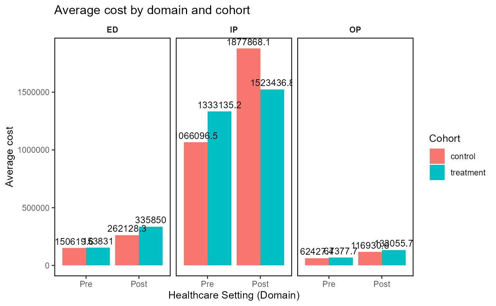

Load library and the data
# Load library
library(hcruR)
# Load sample data
data(hcru_sample_data)
data <- hcru_sample_data
head(hcru_sample_data)
#> # A tibble: 6 × 11
#> patient_id cohort encounter_id care_setting visit_date admission_date
#> <chr> <chr> <chr> <chr> <date> <date>
#> 1 P_1001 control E_645327 IP 2023-08-23 2023-08-23
#> 2 P_1001 control E_591096 ED 2023-08-27 NA
#> 3 P_1001 control E_864419 OP 2023-09-25 NA
#> 4 P_1001 control E_379584 IP 2023-10-03 2023-10-03
#> 5 P_1001 control E_617025 ED 2024-02-07 NA
#> 6 P_1001 control E_379047 ED 2024-03-01 NA
#> # ℹ 5 more variables: discharge_date <date>, encounter_date <date>,
#> # index_date <date>, period <chr>, cost_usd <dbl>Generate HCRU summary using dplyr (this can be used for create HCRU plots)
# Step 1: Estimate HCRU
hcru_summary <- estimate_hcru(data,
cohort_col = "cohort",
patient_id_col = "patient_id",
admit_col = "admission_date",
discharge_col = "discharge_date",
index_col = "index_date",
visit_col = "visit_date",
encounter_id_col = "encounter_id",
setting_col = "care_setting",
cost_col = "cost_usd",
readmission_col = "readmission",
time_window_col = "period",
los_col = "length_of_stay",
custom_var_list = NULL,
pre_days = 180,
post_days = 365,
readmission_days_rule = 30,
group_var_main = "cohort",
group_var_by = "care_setting",
test = NULL,
timeline = "Pre",
gt_output = FALSE
)
#> Warning: The `update` argument of `modify_header()` is deprecated as of gtsummary 2.0.0.
#> ℹ Use `modify_header(...)` input instead. Dynamic dots allow for syntax like
#> `modify_header(!!!list(...))`.
#> ℹ The deprecated feature was likely used in the gtsummary package.
#> Please report the issue at <https://github.com/ddsjoberg/gtsummary/issues>.
#> This warning is displayed once every 8 hours.
#> Call `lifecycle::last_lifecycle_warnings()` to see where this warning was
#> generated.
hcru_summary
#> $`Summary by settings using dplyr`
#> # A tibble: 757 × 15
#> patient_id cohort care_setting time_window Days Month Year Visits Cost
#> <chr> <chr> <chr> <chr> <dbl> <dbl> <dbl> <dbl> <dbl>
#> 1 P_1001 control ED Post 319 10.5 0.873 2 4677.
#> 2 P_1001 control ED Pre 18 0.592 0.0492 1 1871.
#> 3 P_1001 control IP Post 21 0.690 0.0575 1 23591.
#> 4 P_1001 control IP Pre 22 0.723 0.0602 1 23142.
#> 5 P_1001 control OP Post 13 0.427 0.0356 1 699.
#> 6 P_1002 treatm… ED Post 271 8.91 0.741 2 3088.
#> 7 P_1002 treatm… ED Pre 153 5.03 0.419 1 1869.
#> 8 P_1002 treatm… IP Post 270 8.88 0.739 3 42218.
#> 9 P_1002 treatm… OP Pre 195 6.41 0.534 2 1910.
#> 10 P_1003 treatm… ED Post 59 1.94 0.161 1 4895.
#> # ℹ 747 more rows
#> # ℹ 6 more variables: LOS <dbl>, Readmission <dbl>, Visit_PPPM <dbl>,
#> # Visit_PPPY <dbl>, Cost_PPPM <dbl>, Cost_PPPY <dbl>Generate HCRU summary using gtsummary (a publication ready output)
# Step 1: Estimate HCRU
hcru_summary_gt <- estimate_hcru(data,
cohort_col = "cohort",
patient_id_col = "patient_id",
admit_col = "admission_date",
discharge_col = "discharge_date",
index_col = "index_date",
visit_col = "visit_date",
encounter_id_col = "encounter_id",
setting_col = "care_setting",
cost_col = "cost_usd",
readmission_col = "readmission",
time_window_col = "period",
los_col = "length_of_stay",
custom_var_list = NULL,
pre_days = 180,
post_days = 365,
readmission_days_rule = 30,
group_var_main = "cohort",
group_var_by = "care_setting",
test = NULL,
timeline = "Pre",
gt_output = TRUE
)
hcru_summary_gt$`Summary by settings using gtsummary`| Characteristic |
ED
|
IP
|
OP
|
||||||
|---|---|---|---|---|---|---|---|---|---|
| control, N = 501 | treatment, N = 511 | p-value2 | control, N = 531 | treatment, N = 651 | p-value3 | control, N = 501 | treatment, N = 561 | p-value4 | |
| Visits | 0.2 | 0.7 | 0.4 | ||||||
| 1 | 43 (86%) | 39 (76%) | 41 (77%) | 50 (77%) | 41 (82%) | 42 (75%) | |||
| 2 | 7 (14%) | 12 (24%) | 11 (21%) | 15 (23%) | 7 (14%) | 13 (23%) | |||
| Cost | >0.9 | 0.7 | 0.7 | ||||||
| Sum | 150,620 | 153,831 | 1,066,097 | 1,333,135 | 62,427 | 67,378 | |||
| Mean (SD) | 3,012 (1,866) | 3,016 (1,768) | 20,115 (11,119) | 20,510 (9,822) | 1,249 (794) | 1,203 (834) | |||
| Median (Q1, Q3) | 2,769 (1,689, 4,020) | 2,651 (1,630, 4,341) | 18,748 (12,805, 27,399) | 19,962 (12,593, 25,844) | 1,048 (551, 1,704) | 1,140 (462, 1,773) | |||
| Q1 | 1,689 | 1,630 | 12,805 | 12,593 | 551 | 462 | |||
| Q3 | 4,020 | 4,341 | 27,399 | 25,844 | 1,704 | 1,773 | |||
| Min - Max | 221 - 9,208 | 381 - 8,467 | 3,171 - 50,838 | 4,203 - 50,380 | 111 - 3,299 | 129 - 3,432 | |||
| Visit_PPPM | 0.6 | 0.059 | >0.9 | ||||||
| Sum | 32.28 | 48.96 | 69.12 | 52.23 | 48.34 | 56.04 | |||
| Mean (SD) | 0.65 (1.03) | 0.96 (2.32) | 1.30 (2.10) | 0.80 (1.40) | 0.97 (2.18) | 1.00 (2.25) | |||
| Median (Q1, Q3) | 0.28 (0.23, 0.52) | 0.31 (0.25, 0.45) | 0.54 (0.31, 0.80) | 0.37 (0.25, 0.66) | 0.39 (0.25, 0.68) | 0.40 (0.26, 0.68) | |||
| Q1 | 0.23 | 0.25 | 0.31 | 0.25 | 0.25 | 0.26 | |||
| Q3 | 0.52 | 0.45 | 0.80 | 0.66 | 0.68 | 0.68 | |||
| Min - Max | 0.18 - 6.08 | 0.17 - 15.21 | 0.17 - 10.14 | 0.17 - 10.14 | 0.19 - 15.21 | 0.17 - 15.21 | |||
| Visit_PPPY | 0.6 | 0.059 | >0.9 | ||||||
| Sum | 388 | 588 | 831 | 628 | 581 | 673 | |||
| Mean (SD) | 8 (12) | 12 (28) | 16 (25) | 10 (17) | 12 (26) | 12 (27) | |||
| Median (Q1, Q3) | 3 (3, 6) | 4 (3, 5) | 7 (4, 10) | 4 (3, 8) | 5 (3, 8) | 5 (3, 8) | |||
| Q1 | 3 | 3 | 4 | 3 | 3 | 3 | |||
| Q3 | 6 | 5 | 10 | 8 | 8 | 8 | |||
| Min - Max | 2 - 73 | 2 - 183 | 2 - 122 | 2 - 122 | 2 - 183 | 2 - 183 | |||
| Cost_PPPM | 0.8 | 0.5 | 0.4 | ||||||
| Sum | 91,236 | 135,168 | 1,352,632 | 898,000 | 40,212 | 47,274 | |||
| Mean (SD) | 1,825 (3,856) | 2,650 (6,501) | 25,521 (49,388) | 13,815 (31,643) | 804 (1,296) | 844 (1,590) | |||
| Median (Q1, Q3) | 743 (498, 1,316) | 760 (493, 1,316) | 7,821 (3,584, 14,898) | 6,447 (4,567, 12,358) | 375 (222, 912) | 334 (203, 703) | |||
| Q1 | 498 | 493 | 3,584 | 4,567 | 222 | 203 | |||
| Q3 | 1,316 | 1,316 | 14,898 | 12,358 | 912 | 703 | |||
| Min - Max | 93 - 22,330 | 141 - 33,841 | 1,121 - 234,312 | 1,113 - 246,638 | 68 - 8,373 | 32 - 9,937 | |||
| Cost_PPPY | 0.8 | 0.5 | 0.4 | ||||||
| Sum | 1,096,318 | 1,624,220 | 16,253,639 | 10,790,638 | 483,198 | 568,061 | |||
| Mean (SD) | 21,926 (46,330) | 31,847 (78,122) | 306,672 (593,467) | 166,010 (380,231) | 9,664 (15,577) | 10,144 (19,103) | |||
| Median (Q1, Q3) | 8,928 (5,984, 15,813) | 9,137 (5,919, 15,814) | 93,975 (43,062, 179,024) | 77,465 (54,876, 148,500) | 4,507 (2,670, 10,955) | 4,010 (2,436, 8,449) | |||
| Q1 | 5,984 | 5,919 | 43,062 | 54,876 | 2,670 | 2,436 | |||
| Q3 | 15,813 | 15,814 | 179,024 | 148,500 | 10,955 | 8,449 | |||
| Min - Max | 1,123 - 268,322 | 1,699 - 406,644 | 13,475 - 2,815,570 | 13,370 - 2,963,676 | 813 - 100,608 | 387 - 119,403 | |||
| 3 | 1 (1.9%) | 0 (0%) | 2 (4.0%) | 1 (1.8%) | |||||
| LOS | 0.8 | ||||||||
| Sum | 390.0 | 519.0 | |||||||
| Mean (SD) | 7.4 (3.7) | 8.0 (4.9) | |||||||
| Median (Q1, Q3) | 7.0 (5.0, 10.0) | 7.0 (4.0, 10.0) | |||||||
| Q1 | 5.0 | 4.0 | |||||||
| Q3 | 10.0 | 10.0 | |||||||
| Min - Max | 2.0 - 18.0 | 2.0 - 22.0 | |||||||
| Readmission | 9 (17%) | 6 (9.2%) | 0.2 | ||||||
| 1 n (%) | |||||||||
| 2 Pearson’s Chi-squared test; Wilcoxon rank sum test | |||||||||
| 3 Fisher’s exact test; Wilcoxon rank sum test; Pearson’s Chi-squared test | |||||||||
| 4 Fisher’s exact test; Wilcoxon rank sum test | |||||||||
Generate the HCRU plot: average visits by cohort and time-line
# Calculate the average visits
sum_df1 <- hcru_summary$`Summary by settings using dplyr` |>
dplyr::group_by(
.data[["time_window"]],
.data[["cohort"]],
.data[["care_setting"]]) |>
dplyr::summarise(
AVG_VISIT = mean(.data[["Visits"]], na.rm = TRUE), .groups = "drop")
# Load the plot_hcru function
p1 <- plot_hcru(
summary_df = sum_df1,
x_var = "time_window",
y_var = "AVG_VISIT",
cohort_col = "cohort",
facet_var = "care_setting",
facet_var_n = 3,
title = "Average visits by domain and cohort",
x_label = "Healthcare Setting (Domain)",
y_label = "Average visit",
fill_label = "Cohort"
)
p1Generate HCRU plot for average cost by cohort and timeline
# Calculate the total cost
df2 <- hcru_summary$`Summary by settings using dplyr` |>
dplyr::group_by(
.data[["time_window"]],
.data[["cohort"]],
.data[["care_setting"]]) |>
dplyr::summarise(
AVG_COST = sum(.data[["Cost"]], na.rm = TRUE), .groups = "drop")
p2 <- plot_hcru(
summary_df = df2,
x_var = "time_window",
y_var = "AVG_COST",
cohort_col = "cohort",
facet_var = "care_setting",
facet_var_n = 3,
title = "Average cost by domain and cohort",
x_label = "Healthcare Setting (Domain)",
y_label = "Average cost",
fill_label = "Cohort"
)
p2